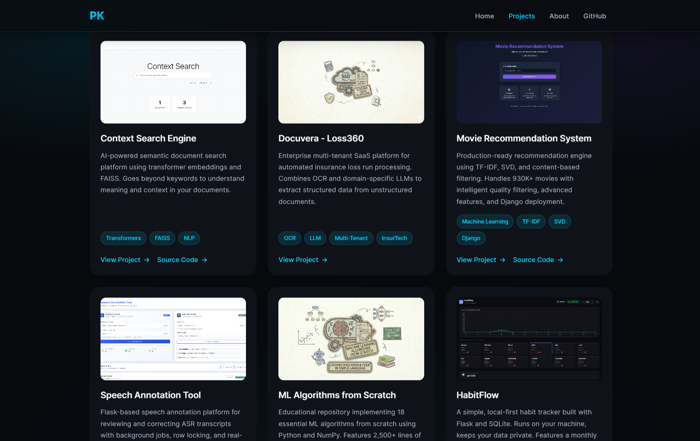
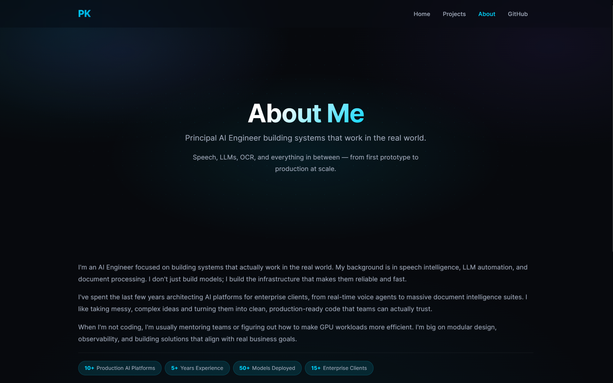

Portfolio Website
Project Overview
This is my personal portfolio website - the site you are currently browsing. It is a hand-crafted, dark-themed developer portfolio built entirely from scratch using vanilla HTML, CSS, and JavaScript with zero external frameworks or build tools.

The site serves as a centralized place to present my AI and machine learning projects with in-depth write-ups, technical breakdowns, and screenshots. It is hosted on GitHub Pages and designed to load fast, look clean, and work well on any device.
Why I Built This
I wanted a single place where all my projects could live with proper context - not just a link to a GitHub repository, but a full explanation of what each project does, why I built it, how it works under the hood, and what I learned along the way.
GitHub README files are great for quick setup instructions, but they are not the right format for telling the story behind a project. A portfolio site lets me control the presentation, add screenshots, walk through architecture decisions, and give each project the space it deserves.
I also wanted to prove to myself that a polished, modern-looking website does not require React, Next.js, Tailwind, or any other framework. Vanilla HTML, CSS, and JavaScript are more than enough when you know what you are doing.
The Problem
Developer portfolios often fall into one of two traps: they are either overly minimal (a list of GitHub links with no context) or overengineered with heavy frameworks that add complexity without adding value.
I wanted something in between - a site that is visually polished and pleasant to read, but simple to maintain. No build step, no package.json, no CI pipeline. Just HTML files that I can edit directly and push to GitHub. The site should also load instantly, work perfectly on mobile, and score well on SEO without any plugins or tooling.
Key Features
Cinematic Landing
Full-viewport landing page with typing animation, glitch effect on the logo, and a clean call-to-action layout
Project Showcase Grid
Card-based grid with thumbnail images, tech tags, and pointer-tracked glow effects on hover
Deep Project Pages
Each project has a dedicated page with full write-up, screenshots, code samples, and tech stack breakdown
Zero Dependencies
No frameworks, no bundlers, no build step - vanilla HTML, CSS, and JS that deploys directly to GitHub Pages
- Fully responsive - adapts gracefully from mobile to ultra-wide desktop screens
- Dark theme by default with carefully chosen contrast ratios for readability
- SEO-optimized with Open Graph, Twitter Cards, canonical URLs, and structured meta tags on every page
- Code blocks with copy buttons on project pages for easy sharing of technical content
- Intersection Observer animations for smooth fade-in effects as content enters the viewport
- Mobile hamburger menu with click-outside-to-close behavior
Screenshots
Landing Page
Projects Page

About Page

Site Architecture
The site is structured as a set of static HTML pages with a single shared stylesheet:
- index.html - Landing page with typing animation and navigation links
- all-projects.html - Project showcase grid with card-based layout
- about.html - Personal introduction, skills, and contact links
- projects/project-N.html - Individual project deep-dive pages (one per project)
- index.css - Single stylesheet powering the entire site's design system
There is no routing library, no templating engine, and no JavaScript framework. Each page is a
self-contained HTML file that links to the shared CSS. Navigation is plain anchor tags. This makes
the site trivial to deploy - push to main and GitHub Pages serves it immediately.
Design Decisions
Dark Theme as Default
The entire site uses a dark color palette with #07090d as the primary background and
#00d4ff as the accent color. This was a deliberate choice - most developer portfolios
default to light themes, and a well-executed dark theme stands out while being easier on the eyes
during extended reading.
CSS Custom Properties for Consistency
All colors, spacings, and surface styles are defined as CSS custom properties in :root.
This means changing the accent color or background tone is a single-line edit that propagates across
every page automatically.
Pointer-Tracked Glow on Project Cards
The project cards on the showcase page have a subtle radial glow that follows the mouse cursor.
This is done by tracking pointermove events and setting CSS custom properties
(--glow-x, --glow-y) that a radial gradient uses for positioning.
It adds a layer of interactivity without any external library.
Tech Stack
Frontend
Design System
Interactions
Hosting & SEO
Core Implementation Details
Typing Animation on Landing Page
The landing page hero title uses a custom typing effect that reveals the name character by character with a blinking cursor. Once complete, the cursor fades out and the final text is set cleanly.
function typeWriter(element, text, speed = 55) {
let i = 0;
element.innerHTML = '';
function type() {
if (i < text.length) {
element.innerHTML = text.slice(0, i + 1)
+ '<span style="border-right:2px solid #00d4ff;'
+ 'animation:blink 0.7s step-end infinite;"></span>';
i++;
setTimeout(type, speed);
} else {
setTimeout(() => { element.innerHTML = text; }, 800);
}
}
type();
}Pointer-Tracked Glow Effect
Each project card tracks the mouse position and exposes it as CSS custom properties. The card's background uses a radial gradient positioned at those coordinates to create a dynamic glow.
document.querySelectorAll('.project-card').forEach(card => {
card.addEventListener('pointermove', (e) => {
const r = card.getBoundingClientRect();
card.style.setProperty(
'--glow-x',
((e.clientX - r.left) / r.width) * 100 + '%'
);
card.style.setProperty(
'--glow-y',
((e.clientY - r.top) / r.height) * 100 + '%'
);
});
});Responsive Navigation
The navigation collapses into a hamburger menu on smaller screens. Clicking outside the menu dismisses it - a small UX detail that many custom navs miss.
mobileMenu.addEventListener('click', (e) => {
e.stopPropagation();
const isOpen = navLinks.classList.toggle('active');
mobileMenu.setAttribute('aria-expanded', isOpen);
mobileMenu.textContent = isOpen ? '✕' : '☰';
});
document.addEventListener('click', (e) => {
if (!navLinks.contains(e.target) && !mobileMenu.contains(e.target)) {
navLinks.classList.remove('active');
mobileMenu.textContent = '☰';
}
});Fade-in on Scroll
Elements with the .fade-in class start invisible and transition into view when the
Intersection Observer detects them entering the viewport. Each element is observed once and then
unobserved to avoid repeated triggers.
const observer = new IntersectionObserver((entries) => {
entries.forEach(entry => {
if (entry.isIntersecting) {
entry.target.classList.add('visible');
observer.unobserve(entry.target);
}
});
}, { threshold: 0.1, rootMargin: '0px 0px -10px 0px' });
document.querySelectorAll('.fade-in').forEach(el => observer.observe(el));My Contribution
I designed and built the entire site from scratch.
- Designed the visual language - dark theme, accent colors, typography scale, and spacing system
- Built the CSS design system using custom properties, grid, flexbox, and clamp-based fluid typography
- Implemented the cinematic landing page with typing animation and logo glitch effect
- Created the project card grid with pointer-tracked glow effect and fade-in scroll animations
- Built individual project page templates with structured sections for consistent deep-dive write-ups
- Wrote all project content including technical breakdowns, code walkthroughs, and architecture explanations
- Optimized SEO with Open Graph, Twitter Cards, canonical URLs, and descriptive meta tags on every page
- Ensured full responsiveness across mobile, tablet, and desktop breakpoints
Challenges & Learnings
Building a design system without a framework
Without Tailwind or a component library, every design decision had to be encoded manually in CSS.
This forced me to think carefully about reusable patterns. CSS custom properties became essential
for maintaining consistency - once I established the token system, adding new pages became
straightforward because the visual language was already defined.
Making dark themes readable
Dark backgrounds are easy to get wrong. Too much contrast hurts the eyes; too little makes text
invisible. I spent time tuning the surface hierarchy (--primary-bg,
--secondary-bg, --accent-bg) and text colors to ensure every section
has clear visual separation without harsh white-on-black contrast.
Responsive layout without a grid framework
Using CSS Grid and Flexbox directly, without Bootstrap or a utility framework, meant I had to
understand the layout algorithms deeply. The project card grid uses
repeat(auto-fit, minmax(250px, 1fr)) to automatically adapt from one column on
mobile to three on desktop - no media queries needed for that specific layout.
Writing compelling project content
The hardest part of a portfolio is not the code - it is the writing. Each project page needed
to explain the what, why, and how in a way that is interesting to both technical and non-technical
readers. Iterating on the content structure (overview, motivation, problem, features, tech stack,
challenges) took longer than building the site itself.
Project Structure
inboxpraveen.github.io/
├── index.html # Landing page
├── all-projects.html # Project showcase grid
├── about.html # About & contact page
├── index.css # Shared design system
├── assests/
│ ├── favicon.ico
│ ├── Resume.pdf
│ └── Original.png
└── projects/
├── project-1.html # Context Search Engine
├── project-2.html # Docuvera - Loss360
├── ...
├── project-9.html # This page (Portfolio Website)
└── resources/
├── project-1/ # Screenshots per project
├── project-2/
├── ...
└── project-9/Future Improvements
- Add a blog section for long-form technical articles and tutorials
- Implement a light/dark theme toggle with localStorage persistence
- Add project filtering and search on the all-projects page
- Create an RSS feed for project updates
- Add page transition animations between project pages
- Explore converting to a static site generator while keeping the zero-dependency philosophy
Closing Note
This portfolio is a living project that grows with every new thing I build. It is open source, and the entire codebase is available on GitHub. If you are building your own portfolio and want to reference the structure, design system, or project page template, feel free to explore the repository.
Sometimes the simplest tools are the most effective. This site is proof that you do not need a JavaScript framework to build something that looks good and works well.